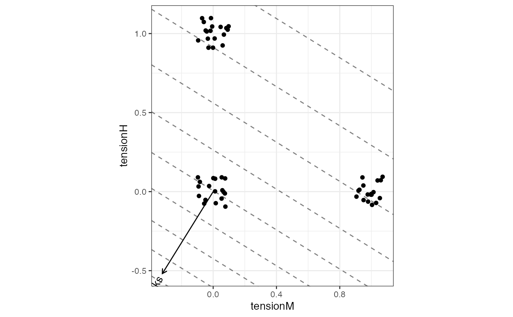
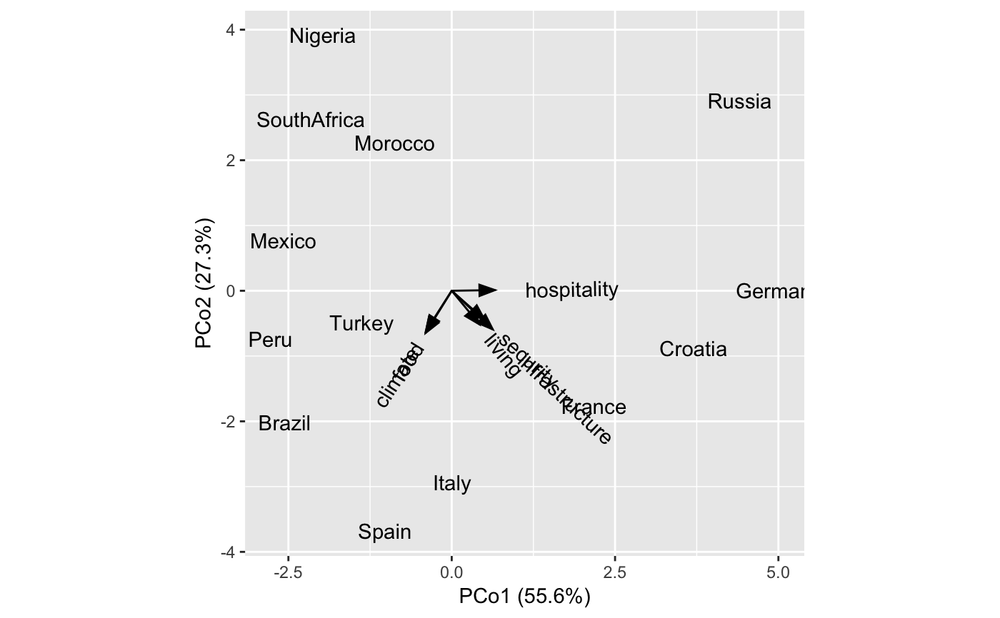
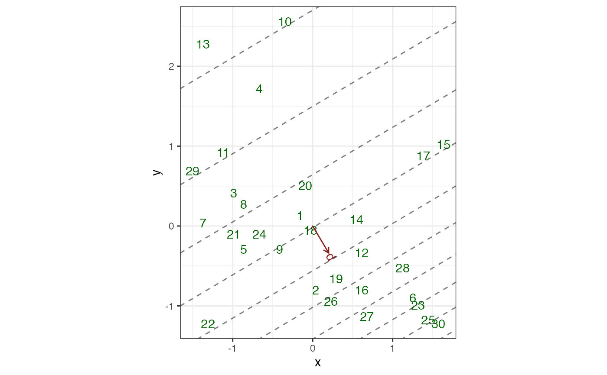
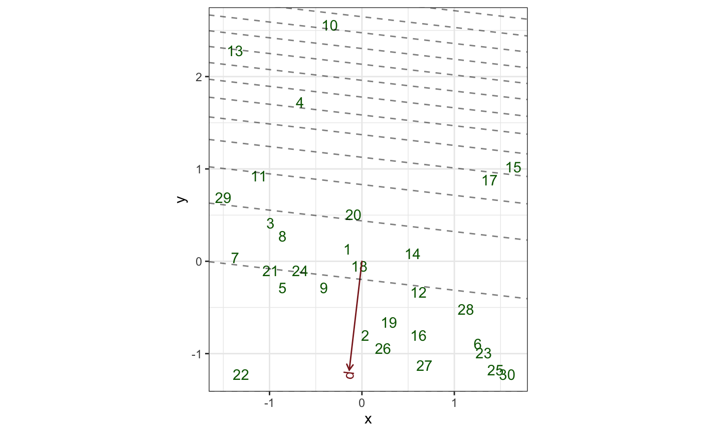
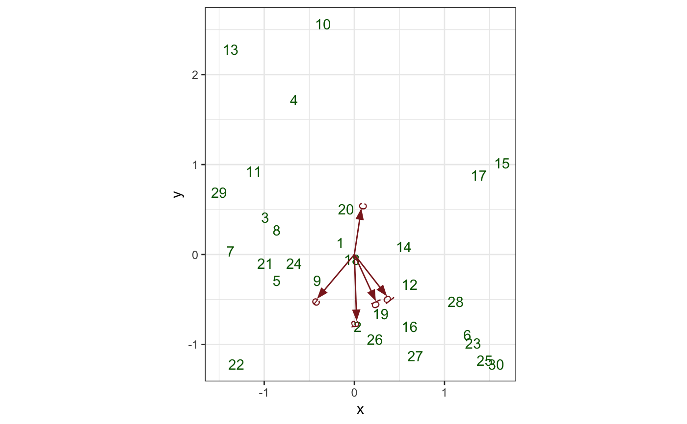
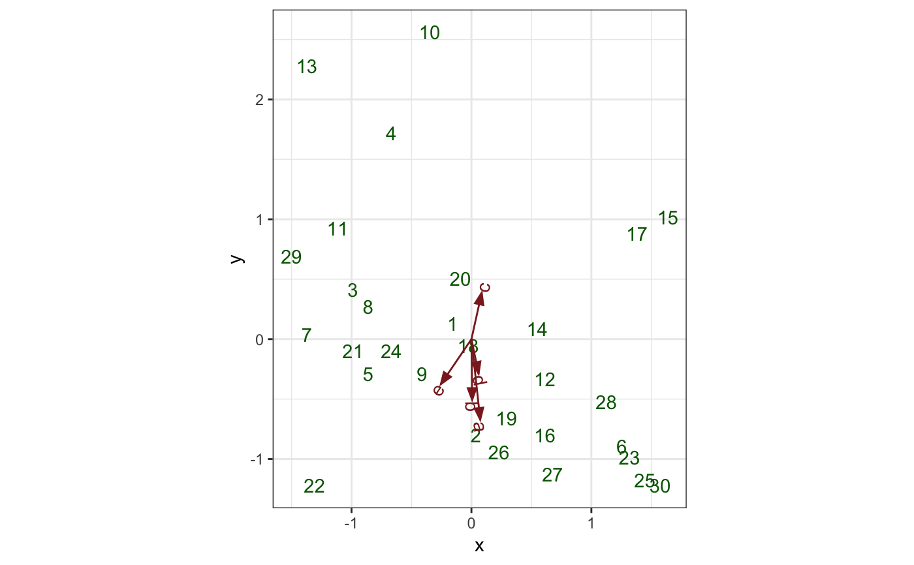

Functionality for linear model objects
methods-lm.RdThese methods extract data from, and attribute new data to,
objects of class "lm", "glm", and "mlm" as returned by stats::lm()
and stats::glm().
# S3 method for lm as_tbl_ord(x) # S3 method for lm reconstruct(x) # S3 method for lm recover_u(x) # S3 method for lm recover_v(x) # S3 method for lm recover_coord(x) # S3 method for lm augmentation_u(x) # S3 method for lm augmentation_v(x) # S3 method for lm augmentation_coord(x) # S3 method for glm augmentation_u(x) # S3 method for mlm recover_u(x) # S3 method for mlm recover_v(x) # S3 method for mlm recover_coord(x) # S3 method for mlm augmentation_u(x) # S3 method for mlm augmentation_v(x) # S3 method for mlm augmentation_coord(x)
Arguments
| x | An ordination object. |
|---|
Examples
# Regression analysis of Motor Trend design and performance data mtcars %>% scale(scale = FALSE) %>% as.data.frame() %>% lm(formula = mpg ~ wt + cyl) %>% as_tbl_ord() %>% augment() %>% mutate_u(influence = .wt.res^2) %>% print() -> mtcars_lm#> # A tbl_ord of class 'lm': (32 x 3) x (1 x 3)' #> # 3 coordinates: (Intercept), wt, cyl #> # #> # U: [ 32 x 3 | 8 ] #> `(Intercept)` wt cyl | .name .hat .sigma .cooksd #> | <chr> <dbl> <dbl> <dbl> #> 1 1 -0.597 -0.188 | 1 Mazd… 0.0548 2.60 5.08e-3 #> 2 1 -0.342 -0.188 | 2 Mazd… 0.0376 2.61 4.44e-4 #> 3 1 -0.897 -2.19 | 3 Dats… 0.0798 2.52 5.68e-2 #> 4 1 -0.00225 -0.188 | 4 Horn… 0.0321 2.61 1.80e-3 #> 5 1 0.223 1.81 | 5 Horn… 0.0912 2.58 2.35e-2 #> # … with 27 more rows, and 4 more #> # U: [ 32 x 3 | 8 ]# variables: .wt.res <dbl>, #> `(Intercept)` wt cyl | # .fit <dbl>, .se.fit <dbl>, #> | # influence <dbl> #> # #> # V: [ 1 x 3 | 1 ] #> `(Intercept)` wt cyl | .name #> | <chr> #> 1 6.72e-16 -3.19 -1.51 | 1 mpgmtcars_lm %>% ggbiplot(aes(x = wt, y = cyl, intercept = `(Intercept)`)) + geom_u_point(aes(color = influence)) + geom_v_vector() + geom_v_isolines(axes = 1, by = 5) + ggtitle( "Weight isolines with data colored by importance", "Regressing mpg onto weight and number of cylinders" )# Multidimensional scaling of country differences and regression of attributes # Reproduce Exhibit 4.2 in Greenacre (2010) data(country_differences) country_differences %>% cmdscale(k = 2) %>% as_tbl_ord() %>% print() -> differences_cmds#> # A tbl_ord of class 'cmds': (13 x 2) x (13 x 2)' #> # 2 coordinates: PCo1 and PCo2 #> # #> # U: [ 13 x 2 | 0 ] #> PCo1 PCo2 | #> | #> 1 0.00781 -2.94 | #> 2 -1.02 -3.68 | #> 3 3.70 -0.883 | #> 4 -2.56 -2.01 | #> 5 4.41 2.91 | #> #> # #> # V: [ 13 x 2 | 0 ] #> PCo1 PCo2 | #> | #> 1 0.00781 -2.94 | #> 2 -1.02 -3.68 | #> 3 3.70 -0.883 | #> 4 -2.56 -2.01 | #> 5 4.41 2.91 | #>differences_plot <- differences_cmds %>% ggbiplot(aes(x = 1, y = 2, label = .name)) + geom_v_text() differences_plot# Reproduce Exhibit 4.5 in Greenacre (2010) data(country_attributes) lm(country_attributes ~ get_u(differences_cmds)) %>% as_tbl_ord() %>% print() -> attributes_fit#> # A tbl_ord of class 'mlm': (13 x 3) x (6 x 3)' #> # 3 coordinates: (Intercept), PCo1, PCo2 #> # #> # U: [ 13 x 3 | 0 ] #> `(Intercept)` PCo1 PCo2 | #> | #> 1 1 0.00781 -2.94 | #> 2 1 -1.02 -3.68 | #> 3 1 3.70 -0.883 | #> 4 1 -2.56 -2.01 | #> 5 1 4.41 2.91 | #> #> # #> # V: [ 6 x 3 | 0 ] #> `(Intercept)` PCo1 PCo2 | #> | #> 1 5.23 0.423 -0.513 | #> 2 5.69 -0.395 -0.618 | #> 3 6.08 -0.399 -0.645 | #> 4 4. 0.502 -0.444 | #> 5 3.85 0.660 0.0102 | #> 6 4.92 0.627 -0.591 |differences_plot + geom_v_vector(data = attributes_fit) + geom_v_text_radiate(data = attributes_fit, hjust = .3)# Generalized linear regression on marine ecosystem data data(bioenv) bioenv %>% transform( x = as.vector(scale(Depth)), y = as.vector(scale(Pollution)) ) %>% glm(formula = d ~ x + y, family = "poisson") %>% as_tbl_ord() %>% print() -> bioenv_pois#> # A tbl_ord of class 'glm': (30 x 3) x (1 x 3)' #> # 3 coordinates: (Intercept), x, y #> # #> # U: [ 30 x 3 | 0 ] #> `(Intercept)` x y | #> | #> 1 1 -0.156 0.132 | #> 2 1 0.0363 -0.802 | #> 3 1 -0.988 0.413 | #> 4 1 -0.668 1.72 | #> 5 1 -0.860 -0.288 | #> #> # #> # V: [ 1 x 3 | 0 ] #> `(Intercept)` x y | #> | #> 1 2.30 0.200 -0.337 |bioenv_pois %>% ggbiplot(aes(x = x, y = y, intercept = `(Intercept)`, label = .name)) + theme_bw() + geom_u_text(color = "darkgreen") + geom_v_vector(color = "brown4") + geom_v_text_radiate(color = "brown4") + geom_v_isolines(family = poisson(), by = 2)# Adapt (3.4) and Exhibit 3.6 in Greenacre (2010) bioenv %>% dplyr::mutate_at(dplyr::vars(a:e), as.logical) %>% transform( x = as.vector(scale(Depth)), y = as.vector(scale(Pollution)) ) %>% glm(formula = d ~ x + y, family = "binomial") %>% as_tbl_ord() %>% print() -> bioenv_bin#> # A tbl_ord of class 'glm': (30 x 3) x (1 x 3)' #> # 3 coordinates: (Intercept), x, y #> # #> # U: [ 30 x 3 | 0 ] #> `(Intercept)` x y | #> | #> 1 1 -0.156 0.132 | #> 2 1 0.0363 -0.802 | #> 3 1 -0.988 0.413 | #> 4 1 -0.668 1.72 | #> 5 1 -0.860 -0.288 | #> #> # #> # V: [ 1 x 3 | 0 ] #> `(Intercept)` x y | #> | #> 1 2.71 -0.137 -1.18 |bioenv_bin %>% ggbiplot(aes(x = x, y = y, intercept = `(Intercept)`, label = .name)) + theme_bw() + geom_u_text(color = "darkgreen") + geom_v_vector(color = "brown4") + geom_v_text_radiate(color = "brown4") + geom_v_isolines(family = binomial(), by = .05)# Generalized multiple linear regression on marine ecosystem data # Reproduce Exhibit 2.5 in Greenacre (2010) data(bioenv) bioenv_std <- dplyr::mutate_if(bioenv, is.numeric, ~ as.vector(scale(.))) resp_std <- as.matrix(dplyr::select(bioenv_std, a:e)) pred_std <- as.matrix(dplyr::select(bioenv_std, x = Depth, y = Pollution)) lm(resp_std ~ pred_std + 0) %>% as_tbl_ord() %>% print() -> bioenv_std_mlm#> # A tbl_ord of class 'mlm': (30 x 2) x (5 x 2)' #> # 2 coordinates: x and y #> # #> # U: [ 30 x 2 | 0 ] #> x y | #> | #> 1 -0.156 0.132 | #> 2 0.0363 -0.802 | #> 3 -0.988 0.413 | #> 4 -0.668 1.72 | #> 5 -0.860 -0.288 | #> #> # #> # V: [ 5 x 2 | 0 ] #> x y | #> | #> 1 0.0247 -0.717 | #> 2 0.229 -0.499 | #> 3 0.0742 0.491 | #> 4 0.347 -0.446 | #> 5 -0.400 -0.475 |ggbiplot(bioenv_std_mlm, aes(label = .name)) + theme_bw() + geom_u_text(color = "darkgreen") + geom_v_vector(color = "brown4") + geom_v_text_radiate(color = "brown4")# Reproduce Exhibit 3.2 in Greenacre (2010) bioenv %>% dplyr::mutate_at(dplyr::vars(a:e), ~ . ^ (1/4)) %>% dplyr::mutate_at(dplyr::vars(Pollution:Depth), ~ as.vector(scale(.))) %>% print() -> bioenv_4rt#> # A tibble: 30 x 10 #> site a b c d e Pollution Depth Temperature Sediment #> <chr> <dbl> <dbl> <dbl> <dbl> <dbl> <dbl> <dbl> <dbl> <chr> #> 1 s1 0 1.19 1.73 1.93 1.19 0.132 -0.156 3.5 S #> 2 s2 2.26 1.41 1.90 1.82 0 -0.802 0.0363 2.5 C #> 3 s3 0 1.78 1.73 1.68 0 0.413 -0.988 2.7 C #> 4 s4 0 0 1.97 1.32 0 1.72 -0.668 2.9 S #> 5 s5 1.90 1.50 1.32 1.78 1.63 -0.288 -0.860 3.1 C #> 6 s6 2.36 2.14 1.90 2 1.50 -0.895 1.25 3.5 G #> 7 s7 1.73 1.57 0 1.82 1.19 0.0389 -1.37 2.9 S #> 8 s8 1.19 0 0 0 1 0.272 -0.860 3.3 C #> 9 s9 2.03 1.63 1.78 1.93 1.57 -0.288 -0.412 3.4 C #> 10 s10 0 1.50 2.26 1.73 0 2.56 -0.348 3 S #> # … with 20 more rowsresp_4rt <- as.matrix(dplyr::select(bioenv_4rt, a:e)) pred_4rt <- as.matrix(dplyr::select(bioenv_4rt, x = Depth, y = Pollution)) lm(resp_4rt ~ pred_4rt + 0) %>% as_tbl_ord() %>% print() -> bioenv_4rt_mlm#> # A tbl_ord of class 'mlm': (30 x 2) x (5 x 2)' #> # 2 coordinates: x and y #> # #> # U: [ 30 x 2 | 0 ] #> x y | #> | #> 1 -0.156 0.132 | #> 2 0.0363 -0.802 | #> 3 -0.988 0.413 | #> 4 -0.668 1.72 | #> 5 -0.860 -0.288 | #> #> # #> # V: [ 5 x 2 | 0 ] #> x y | #> | #> 1 0.0732 -0.672 | #> 2 0.00598 -0.506 | #> 3 0.0855 0.387 | #> 4 0.0596 -0.288 | #> 5 -0.255 -0.375 |ggbiplot(bioenv_4rt_mlm, aes(x = x, y = y, label = .name)) + theme_bw() + geom_u_text(color = "darkgreen") + geom_v_vector(color = "brown4") + geom_v_text_radiate(color = "brown4")